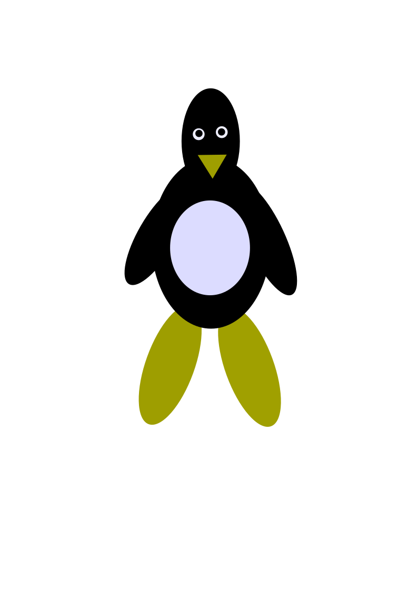

Install Steam di Debian
Panduan lengkap memasang Steam menggunakan repository resmi Debian.

Open Source • Linux • Technology
Selamat datang di WEBSec, blog teknologi yang membahas Linux, Open Source, Gaming di Linux, Hardware, Web Development, dan tutorial praktis berbahasa Indonesia.
Panduan lengkap memasang Steam menggunakan repository resmi Debian.
Perbandingan dua software audio terbaik untuk Linux.
Cara memasang driver AMD di Debian dan distro Linux lainnya.
Cara memainkan Overwatch menggunakan Steam dan Proton.
Perbedaan editor open source dengan versi resmi Microsoft.
Perintah Linux yang paling sering digunakan sehari-hari.